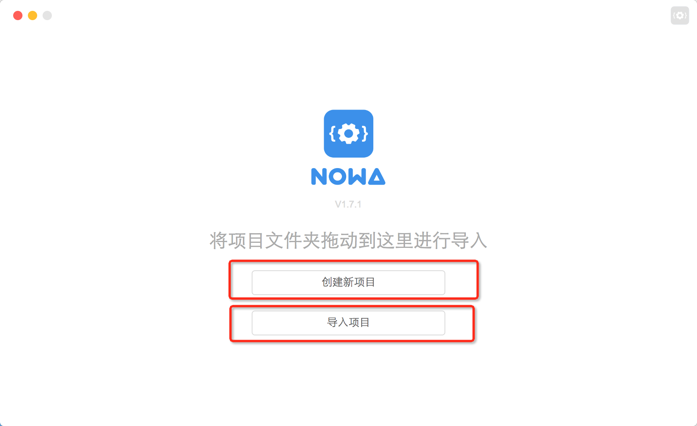
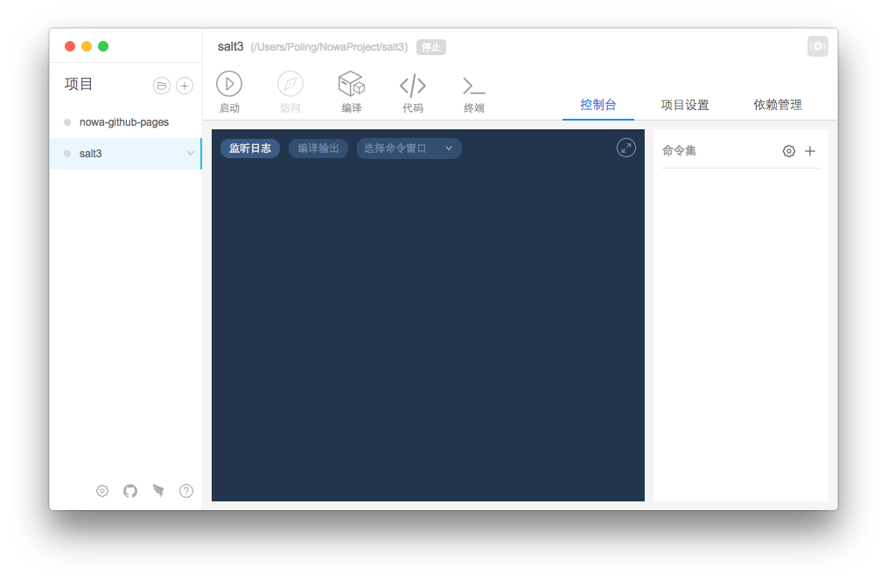

初始化
首次安装工具后，打开工具会出现 '初始化' 页面，显示了 'nowa' 依赖的安装进度。不同机器和网络的等待时间不太相同，大致需要半分钟以上。

如果 'nowa' 组件有更新升级的话，打开工具会重新出现该页面的，用户不用担心以后见不到这个漂亮的页面。
等待进度条走完，如果用户之前没有导入过任何项目， 那么用户会进入简洁时尚大方的欢迎页，可以选择 '导入' 或者 '新建' 项目。当然，用户可以直接把项目拖到工具里来导入项目。

如果用户曾经导入过项目，那么会直接出现项目页面。
